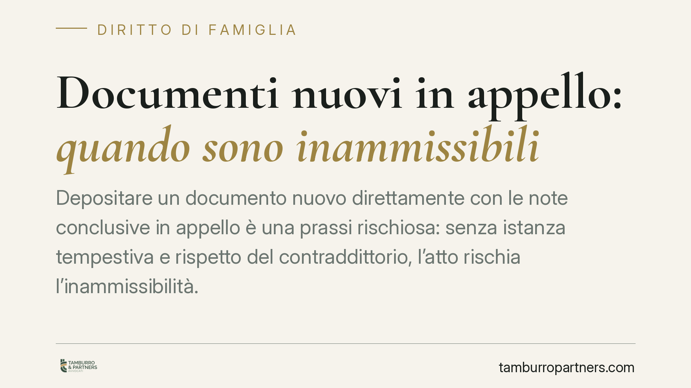

Documenti nuovi in appello: quando sono inammissibili
Depositare un documento nuovo direttamente con le note conclusive in appello è una prassi rischiosa: senza istanza tempestiva e rispetto del contraddittorio, l'atto rischia l'inammissibilità. Il tema è particolarmente sensibile nei giudizi di famiglia, dove i documenti economici incidono sul calcolo dell'assegno di mantenimento. Ecco cosa prevede il diritto vigente e come muoversi.

Il caso
Nel processo civile capita che una parte, in grado di appello, tenti di introdurre documenti non prodotti in primo grado. Un esempio frequente riguarda i giudizi di famiglia: buste paga, estratti conto o dichiarazioni dei redditi depositati tardivamente per incidere sulla quantificazione del mantenimento dei figli.
La questione tecnica è precisa: un documento nuovo può essere versato in atti direttamente con le note conclusive, cioè nella fase terminale del giudizio d'appello, oppure richiede una modalità e una tempistica specifiche? La risposta ha effetti concreti sulla decisione e sul rispetto delle regole del contraddittorio.
Sul punto si registra un orientamento della giurisprudenza di legittimità volto a considerare inammissibile la produzione documentale effettuata irritualmente, senza apposita e tempestiva istanza. Prima di dare per acquisito un singolo precedente, conviene però ricostruire la norma di riferimento nel testo oggi vigente.
Inquadramento normativo
Il regime dei documenti nuovi in appello è disciplinato dall'art. 345 c.p.c., norma sostanzialmente riformata dal D.Lgs. 149/2022 (cosiddetta riforma Cartabia). Questo è il punto da tenere fermo, perché molte informazioni ancora in circolazione fanno riferimento al testo precedente.
Nel regime attuale, per i documenti nuovi l'unico varco di ammissibilità è la prova della non imputabilità del mancato deposito nel primo grado di giudizio: la parte deve cioè dimostrare di non aver potuto produrre quel documento in precedenza per causa a lei non addebitabile. È stato invece soppresso, per i documenti, il precedente criterio dell'«indispensabilità»: non basta più sostenere che il documento sia decisivo per la causa. Si tratta di una differenza sostanziale rispetto al quadro anteriore alla riforma.
A ciò si aggiunge il presidio costituzionale del giusto processo e del contraddittorio (art. 111 Cost.). La preclusione dell'art. 345 c.p.c. non è un formalismo fine a sé stesso: serve a garantire che ogni parte disponga di tempo e strumenti effettivi per esaminare e contestare le prove avversarie. Un documento «paracadutato» nelle note conclusive, oltre a violare le preclusioni processuali, comprime il diritto di difesa della controparte.
Implicazioni pratiche
Nei giudizi di famiglia il tema assume un rilievo particolare. La quantificazione del mantenimento dei figli si fonda sul principio di proporzionalità sancito dall'art. 337-ter c.c., che àncora il contributo di ciascun genitore alle rispettive risorse economiche, ai tempi di permanenza del minore presso ciascuno e alla valenza economica dei compiti domestici e di cura.
Se la fotografia della capacità reddituale delle parti si basa su documenti introdotti irritualmente, il giudice può non tenerne conto. Il risultato è duplice: da un lato il rischio che la parte perda la possibilità di far valere elementi economici rilevanti; dall'altro il pericolo che una decisione fondata su prove inammissibili sia esposta a impugnazione.
In concreto, chi confidava di ribaltare in appello la valutazione economica compiuta in primo grado deve sapere che non è sufficiente possedere il documento «giusto»: occorre averlo prodotto con le forme e nei tempi corretti, oppure dimostrare perché non era stato possibile depositarlo prima.
Cosa fare in concreto
- Produrre i documenti economici già in primo grado. Buste paga, dichiarazioni fiscali ed estratti conto vanno versati nei termini istruttori del primo giudizio, non riservati all'appello.
- Formulare un'istanza espressa e tempestiva in caso di documento nuovo in appello, motivando la non imputabilità del mancato deposito precedente ai sensi dell'art. 345 c.p.c.
- Non affidare la produzione alle sole note conclusive. È opportuno verificare che il deposito avvenga in una fase in cui la controparte disponga di tempo effettivo per esaminare e contestare il documento.
- Documentare la causa non imputabile (ad esempio la sopravvenuta disponibilità del documento, o la sua provenienza da un soggetto terzo) con elementi concreti, non con affermazioni generiche.
- Coordinare la strategia probatoria con il calcolo del mantenimento, verificando che gli elementi reddituali su cui poggia la richiesta ex art. 337-ter c.c. siano tutti ritualmente in atti.
---
*Contributo informativo a cura di Tamburro & Partners - Avv. Giuseppe Tamburro. Non costituisce parere legale.*
Ogni famiglia ha il suo equilibrio.
Separazione, divorzio, affidamento, assegno: se vuoi un confronto riservato su una specifica situazione, scrivi allo studio. Ti rispondiamo entro un giorno lavorativo.